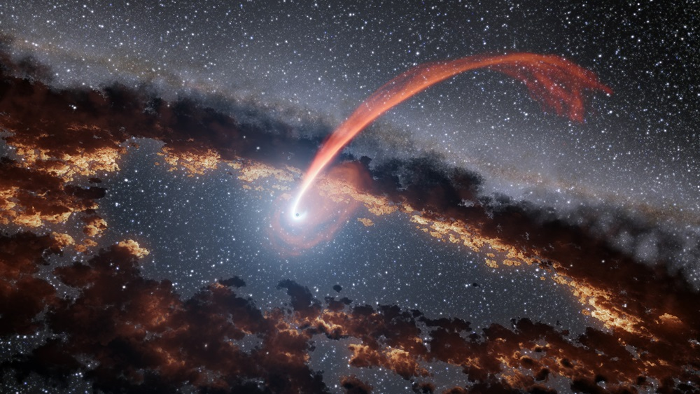
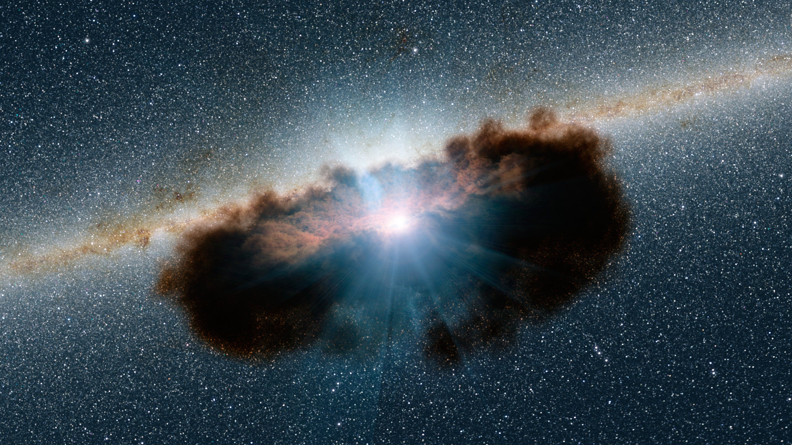

About Me
Background
Hello! I am an NHFP Einstein Fellow at the University of Illinois Urbana-Champaign and affiliated with the NSF-Simons AI Institute for the Sky (SkAI) in Chicago.
My research focuses on a range of transients resulting from accretion onto supermassive black holes at the centers of galaxies.
I'm especially interested in multi-wavelength follow-up of optically-selected transient events.
I was born and raised in Maryland and did my undergraduate studies at the University of Maryland, College Park.
I then moved to the University of Hawai'i at Mānoa, where I received my PhD in April 2025. I recently moved to Illinois to start my Einstein Fellowship.
In addition to astronomy, I enjoy musicals, sports, and spending time with my cat Cookie!
Education
Ph.D. Astronomy 2025, Institute for Astronomy, University of Hawai'i at Mānoa,
Honolulu, HI
M.S. Astronomy 2021, Institute for Astronomy, University of Hawai'i at Mānoa,
Honolulu, HI
B.S. Astronomy with High Honors 2019, University of Maryland, College Park, MD
B.S. Physics with High Honors 2019, University of Maryland, College Park, MD
Research Interests
My primary research interests lie in observational astrophysics, with a particular focus on transient astronomy, including tidal disruption events,
active galactic nucleus flares, active galactic nucleus variability, and transient host galaxies. I am also interested in a number of other time-domain projects
such as stellar flares.
Research

Tidal Disruption Events
A tidal disruption event (TDE) occurs when a star is ripped apart by a supermassive black hole.
Once a theoretical concept, we are now discovered tens of new TDEs per year thanks to the growth of transient sky surveys
like the All-Sky Automated Survey for Supernovae (ASAS-SN), the Asteroid Terrestrial Impact Last Alert System (ATLAS),
the Panoramic Survey Telescope and Rapid Response System (Pan-STARRS), and the Zwicky Transient Facility (ZTF).
TDEs are promising probes of black holes, as information on properties like black hole mass and spin are imprinted on TDE observables.
Nevertheless, there are still large gaps in our understanding of the physics behind TDE emission. I am interested in better understanding
the physics behind TDEs both through detailed studies of nearby events and by building robust samples with which we can search for correlations.

Active Galactic Nucleus Variability
Active galactic nuclei (AGN) are the actively accreting supermassive black holes at the centers of roughly 10% of galaxies
in the local universe. Normally, they vary in a stochastic manner, but sometimes they exhibit large flares. In many cases these
photometric flares are accompanied by changes in their optical spectra. It remains unclear how these flares originate,
but they nevertheless represent a unique probe of extreme accretion environments.
Ambiguous Nuclear Transients
Some transients do not look like either AGN flares or TDEs. We've nicknamed such transients ambiguous nuclear transients, or ANTs.
These events seem to share some characteristics of TDEs (similar UV/optical evolution, blue optical spectra) but also have similarities
to AGNs (power-law X-ray emission, massive black holes). One possibility is that many ANTs are simply transients like TDEs or supernovae
occurring in an AGN host galaxy. However, the study of ANTs is still in the early stages, and the universe continues to surprise us with
new objects that are increasingly hard to reconcile with a single physical model.
Mentoring
I am passionate about mentoring students, and have been lucky to co-mentor several excellent research experience for undergraduates (REU)
students and a first-year UH student with my PhD advisor, Ben Shappee. Below are short descriptions of the various projects I've helped advise.
Jesse Zeldes (UH REU) - Superflaring M-dwarfs with K2 and TESS
Jesse studied low-mass stars that were observed to undergo a very energetic flare in ASAS-SN data.
Jesse used high-cadence and high-precision K2
and TESS data to compare the flare-frequency distributions (i.e. how often
a flare of a given energy occurs) to broader samples. See Jesse's paper here.
Helena Treiber (UH REU → Princeton grad) - Selecting AGNs From TESS Variability
Lena developed methods to select active galactic nuclei (AGNs) based on their stochastic variability. Lena used
TESS data to search for AGNs, particularly those with low black hole masses.
She succeeded in finding several new candidate AGNs, and we learned several valuable lessons about using TESS to search for
variable sources. See Lena's paper here.
Vera Berger (UH REU → MIT grad) - Stellar Flares with GALEX
Vera analyzed the UV emission from stellar flares. Vera used GALEX
data to search for and characterize flares on a sample of nearby stars, finding that the typically assumed flare temperatures of 9000 - 10,000 K are underestimated.
See Vera's paper here and a press release based on her work
here.
Michael Bolish (UH REU) - AGN Variability with ASAS-SN
Michael's project focused on studying the variability properties of well-measured AGNs using ASAS-SN survey data.
Ashley Tarrant (UH REU → CU grad in Atmospheric Sciences) - AGN Variability with ASAS-SN
Ashley is studying the variability properties of well-measured AGNs using ASAS-SN survey data. She is currently
using damped-random walk modeling to understand the correlation between the variability timescale of an AGN and its central
supermassive black hole mass. See Ashley's paper
here.
Willem Hoogendam (UH grad) - Tidal Disruption Events
Willem led the discovery paper on the closest TDE to date, ASASSN-23bd. ASASSN-23bd occurred in a galaxy that hosts an AGN, atypical for TDEs, and providing
a window into the interplay between tidal debris and the AGN disk. ASASSN-23bd is also one of the least luminous and fastest declining TDEs yet observed, with the
broader class of faint and fast TDEs being promising probes of intermediate mass black holes. See Willems's paper
here and a press release based on his work
here.
Athena Engholm (UH undergrad → UIUC grad) - Coronal Line Emitters
Athena is studying an unusual nuclear transient discovered by the ATLAS survey, which shows high ionization (>100 eV) coronal lines
in its optical spectra.
Allison Blum (UH REU → UH grad) - Ambiguous Nuclear Transients
Allison is studying an ambiguous nuclear transient discovered by the ASAS-SN survey, with an unusual host galaxy and properties that
blur the lines between typical TDEs and AGN flares.
Contact
Address: 1002 W. Green Street, Urbana, IL 61801
Email: jhinkle6@illinois.edu